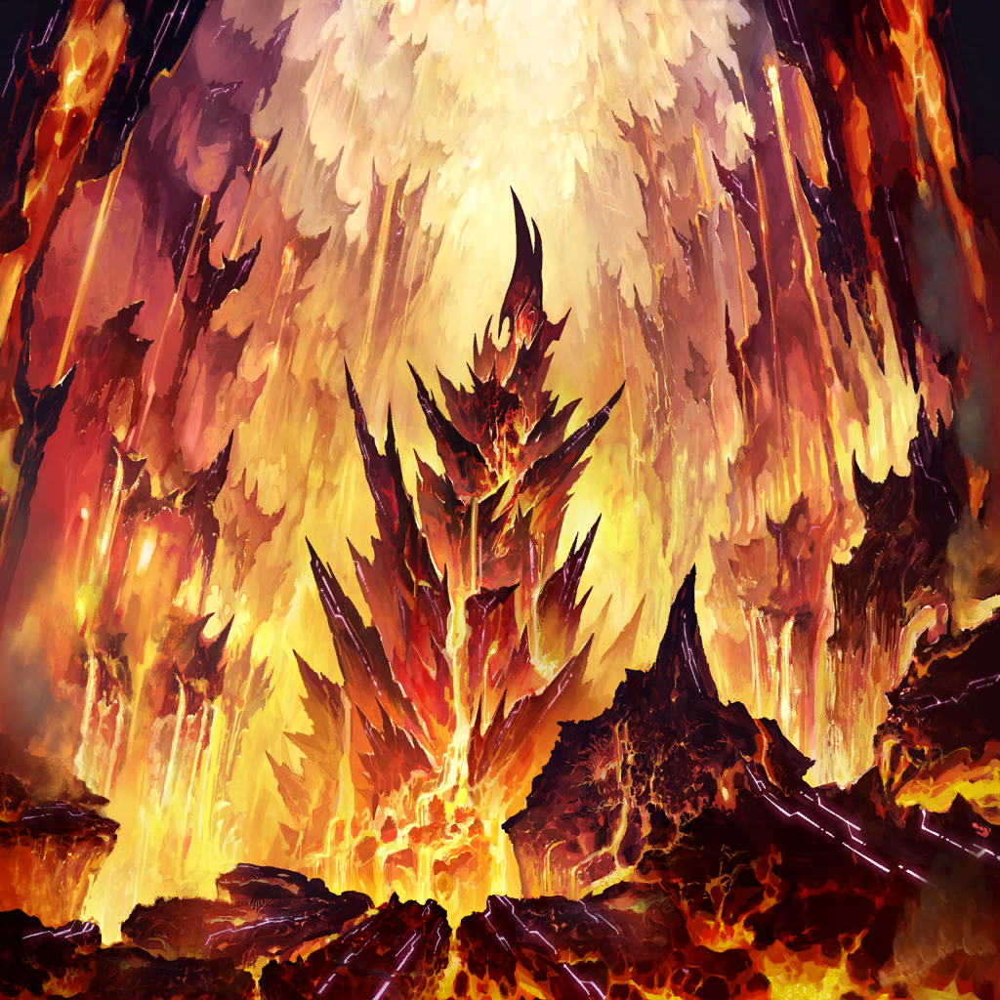
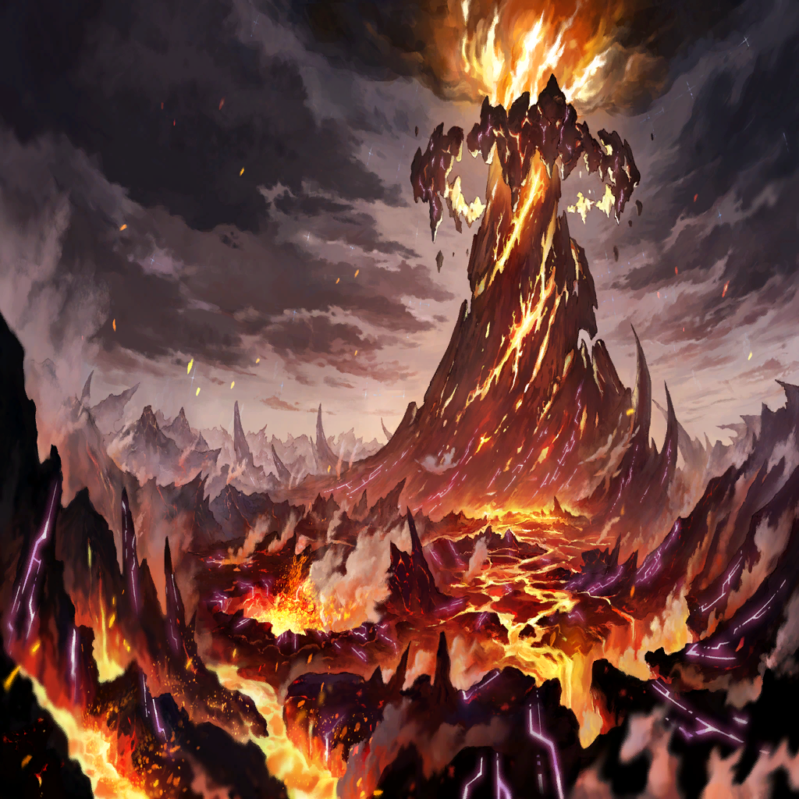
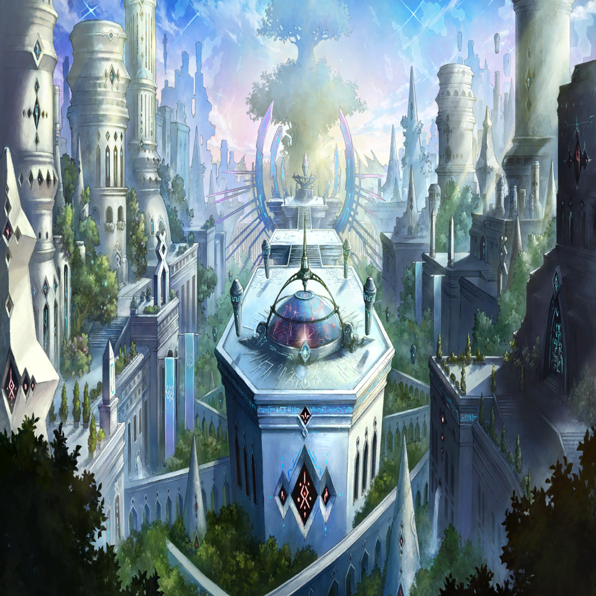
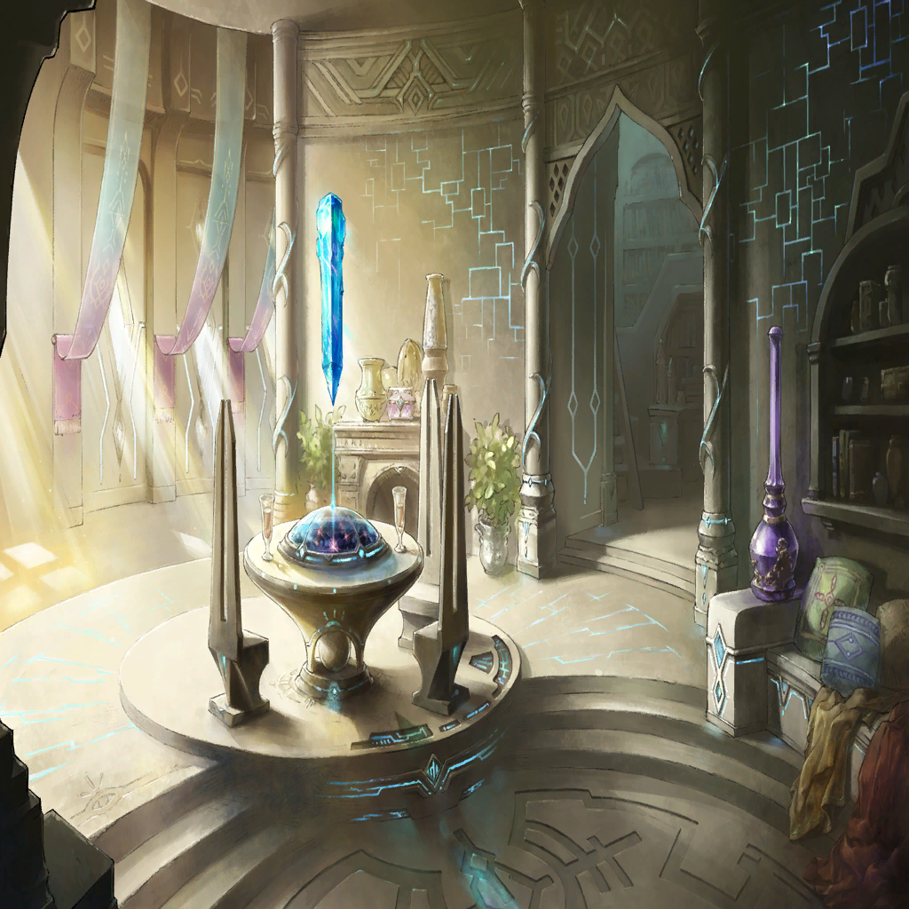

|
|  |
Sulva |
Arghhhhhh! |
Nyx |
…! Sulva! Be careful-- |
Sulva |
Dammit…! |
Sulva |
I don't understand. What did Terese and King Arius entrust to me? |
Sulva |
Whatever it is, I can't let things end here. |
Sulva |
That much I know! So… |
Sulva |
Andechs! You, who are the most lauded knight in the land-- |
Sulva |
Deliver us a new dawn! Deliver us hope! And give us time to sort through this chaos! |
Sulva |
May your blade be swift! |
| Andechs |
You got it, kid! |
| Cursed Beast Satna |
*Growl* |
| Andechs |
…I am Andechs! |
| Andechs |
My desire to save my homeland-- |
| Andechs |
Led me to betray my countrymen. I struck them down, amassing countless sins and corpses. |
| Andechs |
I don't expect any peace for me in the afterlife. I know my sins are too great. |
| Andechs |
But-- |
| Andechs |
I'm not dead yet! This is not the end for us! |
| Andechs |
Darkened Sword - Hamal! Heed my call! |
| Andechs |
I, who carry the weight of my sins on my shoulders! |
| Andechs |
Let me open the path of hope for all who need it! |
Nimul |
There! Now's your chance, Andechs! |
| Andechs |
Hrrraaaahhhhh!! |
Daphne |
Andechs! Look out! |
| Andechs |
Thanks! I owe you one! |
| Cursed Beast Satna |
*Roar* |
| Andechs |
Do you understand, Satna? |
| Andechs |
I'm a criminal--a sinner who doesn't deserve forgiveness. But…I have allies who believe in me, nonetheless. |
| Andechs |
That's why I can fight! That's right. THIS-- |
| Andechs |
This strike, the weight of my blade, this is my people's primal cry for life! Know it well! |
| Andechs |
This Wrath is my justice! It radiates the heat of life! |
| Andechs |
May it rend you asunder, beast of ruin! |
Nimul |
Is it…over? |
Nimul |
...! Andechs! Satna is still-- |
| Andechs |
…No, it's alright. |
| Cursed Beast Satna |
…!?!? |
Nimul |
Wait, did you use magil to induce a delayed slash? |
| Andechs |
It's my special move. I call it…uh…"Death at Dawn Wahrheit!" |
Mira |
…Pff! Do you really need to name it? |
| Andechs |
Oh, c'mon! It sounds cool, doesn't it? Who doesn't want to yell out a cool skill name and go wild? |
Nimul |
Did we really…defeat it? |
| Andechs |
Yeah. My sword most definitely captured its core. |
Nimul |
Then let's hurry up and get out of here. We've come too far to let the Ira Belt fall to corruption. |
| Andechs |
Right. I'll leave that part to you. I'm only good with swords, anyway. |
Nimul |
Thanks to that sword, a path of hope has opened up in this region. |
| Andechs |
…I hope so. I really do. |
Sulva |
… |
| Andechs |
…Did you accomplish your goal? |
Sulva |
…Yeah. |
Sulva |
I said what I needed to say. I feel like I've been entrusted with something…very important. |
Sulva |
I'm not sure exactly what that "something" is… |
Sulva |
But maybe that's okay. There's no right answer… I have to decide for myself. |
| Andechs |
I see… |
Sulva |
…Let's live to the fullest, Andechs. For all those who couldn't be saved--for Terese and King Arius. |
| Andechs |
Well said. I couldn't agree more. |
Nimul |
…? |
Nimul |
…The core…appears uncorrupted? |
Nimul |
What could this mean? Leviathan's core was certainly corrupted… |
Adaleigh |
Huh? Did you hear something? |
Mira |
Nuh-uh. Why're you looking at me? |
Adaleigh |
Never mind. I thought I heard a weird sound just now… |
Mira |
Holy smokes! L-Libra! |
Nyx |
What're you doing, Mira! Stop Libra's pressurization! |
Mira |
I-I'm trying! But nothing's working! |
Nyx |
What!? |
Mira |
Eek! At this rate, Libra's magil will overflow-- |
Nimul |
…! Don’t tell me all of Satna's corruption transferred to Libra!? |
| Quence |
Too bad…Pursuers. I'm a man who always has a plan B. |
| Quence |
The Space-Time transfer operation was designed to take place…no matter what… |
Nimul |
Quence! How can you still… |
| Quence |
Now then, Pursuers of Truth. I invite you on a journey to the past-- |
Nimul |
Tch! |
Emmel |
Brother, give me your hand! |
|  |
|  |

Waginau |
…Alright. Let's call it a day, shall we? Good work, everyone. |
Waginau |
…Looks like the town's repairs are on track. All that's left is to await Nimul's return… |
|  |
Waginau |
…With everyone away-- |
Waginau |
It sure is quiet… |
Waginau |
I never thought I'd miss Adaleigh's antics… |
Waginau |
(…Maybe I should've been more insistent about joining them…) |
Waginau |
No! What am I thinking? Nimul left me to look after this town! |
Waginau |
…I need to do more training. Maybe I should practice a bit-- |
Waginau |
…! Who are you? |
| ??? |
…Only an amateur would approach this close. |
| ??? |
But desperate times call for desperate measures. |
Waginau |
Are you…? That aura! You're…Zafeiris! |
| Zafeiris |
Bravo, Seeker of Truth. |
| Zafeiris |
You, and only you, are unique. Unlike the other Pursuers, you have potential. |
Waginau |
Potential? |
| Zafeiris |
The Pursuers of the Gula Belt are in danger. You must make a choice-- |
| Zafeiris |
In order to save your companions, are you prepared to submit your body to corruption? |
Waginau |
What!? |
|
|
The world will end, sooner or later. No matter how much humankind struggles or how much we pray... |
|
But…is our fate truly set in stone? |
|
I can't say for certain. How could I? All I know is-- |
|
That decision sparked a change. That much I remember, even now-- |